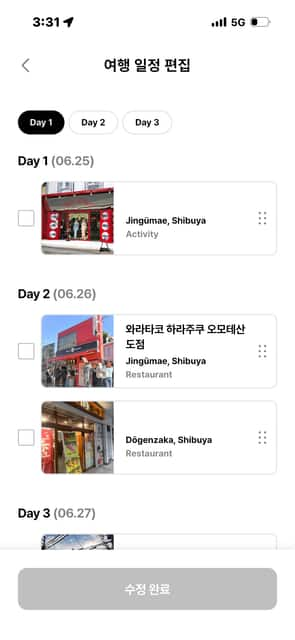

첫 실험 · 2026.09.10 · 사용자 재현 품질 확인
같은 화면을, 설명만으로 만들면
셀레트립의 여행 일정 편집 화면을 다섯 요소로 나눴어요.
구현 담당에게는 원본 대신 아래 프롬프트와 사진 에셋만 전달했어요.
원본과 조립 화면
셀레트립 · UIbowl 출처 · 양쪽 표시 폭390px. 원래 CSS 크기와 DPR은 미상이에요.

E1 · 상단 제목 행
제목은 화면 중심, 뒤로가기는 왼쪽 영역에 속해요.
이 요소의 실제 프롬프트 펼치기
아래 요소 설명과 함께 공유 계약·조립 조건도 구현 입력으로 전달했어요. Day 3 조각은 P2 경계 보완을 추가했어요.
## E1 — 상단 제목 행 역할: 현재 편집 화면 식별. 높이62px, 화면 폭 전체. 뒤로가기 표시는 왼쪽24px의 24px 회색 Lucide chevron-left, 제목은 화면 중심 x195에 놓는다. 뒤로가기 때문에 제목 중심이 오른쪽으로 밀리지 않도록 좌우 동일한 44px 공간을 가진 3열을 사용한다. 제목 '여행 일정 편집'은18px/26px/700. 정적 표본에서 뒤로가기는 비활성 상태로 명시하고 가짜 이동을 연결하지 않는다.
E2 · 날짜 선택
작은 선택군이에요. 선택된 항목만 검정 배경으로 표시해요.
이 요소의 실제 프롬프트 펼치기
아래 요소 설명과 함께 공유 계약·조립 조건도 구현 입력으로 전달했어요. Day 3 조각은 P2 경계 보완을 추가했어요.
## E2 — 날짜 선택 역할: 좁고 가벼운 날짜 선택군. 제목 행 아래26px, 좌측24px. Day 1 / Day 2 / Day 3, 가로 나란히 gap8px. 각 시각 박스64×32px, 완전한 pill 반경16px. Day 1은 검정 배경+흰 글자, 나머지는 흰 배경+검정 글자+1px 연회색 외곽. 글자14px/20px/700, 수평·수직 중앙. 큰 주요 CTA처럼 가로폭을 나누지 않는다. 정적 시각 표본으로 aria-label에 선택 상태를 설명하고 상호작용을 약속하지 않는다.
E3 · 날짜 그룹 제목
제목은 카드보다 바깥쪽, 체크박스와 같은 왼쪽 기준에 놓여요.
이 요소의 실제 프롬프트 펼치기
아래 요소 설명과 함께 공유 계약·조립 조건도 구현 입력으로 전달했어요. Day 3 조각은 P2 경계 보완을 추가했어요.
## E3 — 날짜 그룹 제목 역할: 장소 행들을 날짜별로 묶는다. 'Day 1 (06.25)', 'Day 2 (06.26)', 'Day 3 (06.27)'. Day 부분16px/22px/700 검정, 괄호 날짜16px/22px/400 회색. 같은 baseline, 둘 사이4px. 시작 x24는 체크박스 왼쪽과 일치하며 카드 시작 x55와 다르다. 선택군 아래26px 후 제목, 제목 아래16px 후 첫 행. 같은 날짜 내부 행 간격18px, 다른 날짜 제목까지40px. 그룹 전체를 외곽 카드로 감싸지 않는다.
E4 · 방문 장소 행 · 짧은 내용
체크박스는 카드 밖에 있어요. 사진은 카드 높이를 채우고 글자는 사진 옆에 모여요.
이 요소의 실제 프롬프트 펼치기
아래 요소 설명과 함께 공유 계약·조립 조건도 구현 입력으로 전달했어요. Day 3 조각은 P2 경계 보완을 추가했어요.
## E4 — 방문 장소 행 역할: 체크박스 + 장소 정보 박스 + 순서 손잡이. 전체 가용폭342px. 바깥 행은 22px 체크박스 열 +9px gap +311px 장소 박스. 체크는 장소 박스 밖이며 수직 중심. 네이티브 checkbox22×22px(키보드 조작 가능), 첫 상태 unchecked. 각 label의 의미 있는 장소 이름을 accessible name으로 연결한다. 장소 박스는 높이96px, 흰 배경,1px 연회색 외곽, 반경6px. 내부 가로 관계: 96px 정사각 사진 →16px 간격 → 유연한 글자 영역 →24px 손잡이. 사진은 박스 왼쪽 가장자리부터 시작하고 내부 패딩으로 작아지지 않는다. 사진은 object-fit:cover, 왼쪽 모서리만 박스 반경에 맞춰 잘라낸다. 글자 영역 min-width:0, 수직 중앙. 오른쪽 손잡이는 우측6px 여유, Lucide grip-vertical 18px, 회색. 레이아웃 설명 목적의 장식 표시이며 실제 drag 동작은 연결하지 않는다. 외곽 박스는 개별 장소의 경계이고 섹션 구분선이 아니다. 내용과 변형: - Day 1: photo-1.png, 굵은 'Jingūmae, Shibuya' 14px/19px, 보조 'Activity' 14px/19px 회색. 두 줄 묶음의 중심을 사진 중심에 맞춘다. 제목과 보조 간격2px. - Day 2 첫 행: photo-2.png, 장소명 '와라타코 하라주쿠 오모테산도점' 14px/19px/700, 그 아래 'Jingūmae, Shibuya' 같은 굵기, 그 아래 'Restaurant' 14px/19px 회색. 장소명은 공간에 따라2줄, 생략 금지. 나머지 단어도 보존한다. 최대4줄을 같은96px 안에 위아래 여유를 두고 배치한다. - Day 2 둘째 행: photo-3.png, 'Dōgenzaka, Shibuya' 굵게 + 'Restaurant' 회색. 사진과 타이포 역할은 첫 행과 공유한다. - Day 3: 원본에서 상단만 보이므로 photo-fragment.png만 높이18px로 보이는 부분을 재현한다. 전체 장소명·행 높이는 unknown이며 별도 내용을 생성하지 않는다. 14px 하한 때문에 글자와 사진 비율은 원본보다 커질 수 있다. 이 사실을 원본이 원래14px였다는 말로 바꾸지 않는다. 폭320px에서는 장소 텍스트가 넘치면 행 min-height96px를 유지하며 콘텐츠에 따라 높이를 늘린다. 가로 잘림이나 숨긴 글자로 해결하지 않는다.
E4-long · 방문 장소 행 · 긴 내용
내용이 길어져도 사진 크기와 카드 구조를 공유해요. 작은 글자는14px 하한에 맞췄어요.
이 요소의 실제 프롬프트 펼치기
아래 요소 설명과 함께 공유 계약·조립 조건도 구현 입력으로 전달했어요. Day 3 조각은 P2 경계 보완을 추가했어요.
## E4 — 방문 장소 행 역할: 체크박스 + 장소 정보 박스 + 순서 손잡이. 전체 가용폭342px. 바깥 행은 22px 체크박스 열 +9px gap +311px 장소 박스. 체크는 장소 박스 밖이며 수직 중심. 네이티브 checkbox22×22px(키보드 조작 가능), 첫 상태 unchecked. 각 label의 의미 있는 장소 이름을 accessible name으로 연결한다. 장소 박스는 높이96px, 흰 배경,1px 연회색 외곽, 반경6px. 내부 가로 관계: 96px 정사각 사진 →16px 간격 → 유연한 글자 영역 →24px 손잡이. 사진은 박스 왼쪽 가장자리부터 시작하고 내부 패딩으로 작아지지 않는다. 사진은 object-fit:cover, 왼쪽 모서리만 박스 반경에 맞춰 잘라낸다. 글자 영역 min-width:0, 수직 중앙. 오른쪽 손잡이는 우측6px 여유, Lucide grip-vertical 18px, 회색. 레이아웃 설명 목적의 장식 표시이며 실제 drag 동작은 연결하지 않는다. 외곽 박스는 개별 장소의 경계이고 섹션 구분선이 아니다. 내용과 변형: - Day 1: photo-1.png, 굵은 'Jingūmae, Shibuya' 14px/19px, 보조 'Activity' 14px/19px 회색. 두 줄 묶음의 중심을 사진 중심에 맞춘다. 제목과 보조 간격2px. - Day 2 첫 행: photo-2.png, 장소명 '와라타코 하라주쿠 오모테산도점' 14px/19px/700, 그 아래 'Jingūmae, Shibuya' 같은 굵기, 그 아래 'Restaurant' 14px/19px 회색. 장소명은 공간에 따라2줄, 생략 금지. 나머지 단어도 보존한다. 최대4줄을 같은96px 안에 위아래 여유를 두고 배치한다. - Day 2 둘째 행: photo-3.png, 'Dōgenzaka, Shibuya' 굵게 + 'Restaurant' 회색. 사진과 타이포 역할은 첫 행과 공유한다. - Day 3: 원본에서 상단만 보이므로 photo-fragment.png만 높이18px로 보이는 부분을 재현한다. 전체 장소명·행 높이는 unknown이며 별도 내용을 생성하지 않는다. 14px 하한 때문에 글자와 사진 비율은 원본보다 커질 수 있다. 이 사실을 원본이 원래14px였다는 말로 바꾸지 않는다. 폭320px에서는 장소 텍스트가 넘치면 행 min-height96px를 유지하며 콘텐츠에 따라 높이를 늘린다. 가로 잘림이나 숨긴 글자로 해결하지 않는다.
E5 · 하단 완료 영역
완료는 화면 전체의 행동이에요. 회색·흰 글자 조합을 보존하고 원본의 상단 선은 생략했어요.
이 요소의 실제 프롬프트 펼치기
아래 요소 설명과 함께 공유 계약·조립 조건도 구현 입력으로 전달했어요. Day 3 조각은 P2 경계 보완을 추가했어요.
## E5 — 하단 완료 영역 역할: 편집 화면 전체에 적용되는 완료 행동. 조립 프레임의 아래쪽103px를 흰 footer가 소유하고 위에 선을 긋지 않는다. 내부 위24px/좌우24px, 버튼 높이56px/폭342px, 반경12px. '수정 완료' 16px/22px/700 흰색, 배경#bdbdbd, 아이콘 없음. 원본에서 비활성처럼 보이나 실제 조건은 unknown. 이번 정적 실험에서는 disabled로 선택하고 disabled 속성을 적용한다. 아래23px는 화면 하단 여유로 유지한다. fixed 여부는 원본에서 알 수 없으며, 실험 조립에서는 프레임의 마지막 행으로 배치한다.
어긋난 부분을 알려주세요
“E4에서 사진과 글자 사이가 더 좁아야 해”처럼 말씀해주시면 돼요. 번호 없이 위치로 설명해도 괜찮아요.
지적 → 수정 프롬프트 → 다시 만든 화면 → 스킬의 해석 기준 순서로 기록하고, 이번 원본과 결과도 보존할게요.
현재 비교 기록 · 스킬 초안: reference-decompose